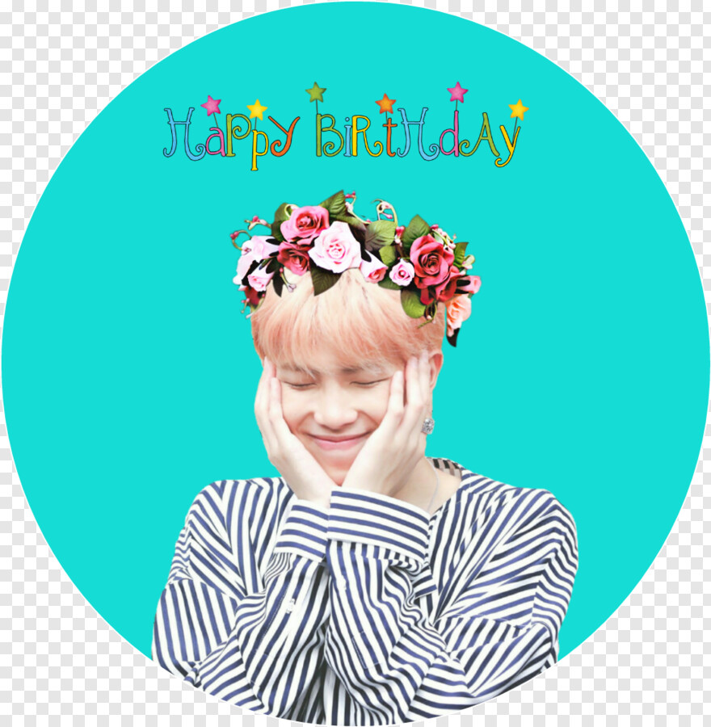
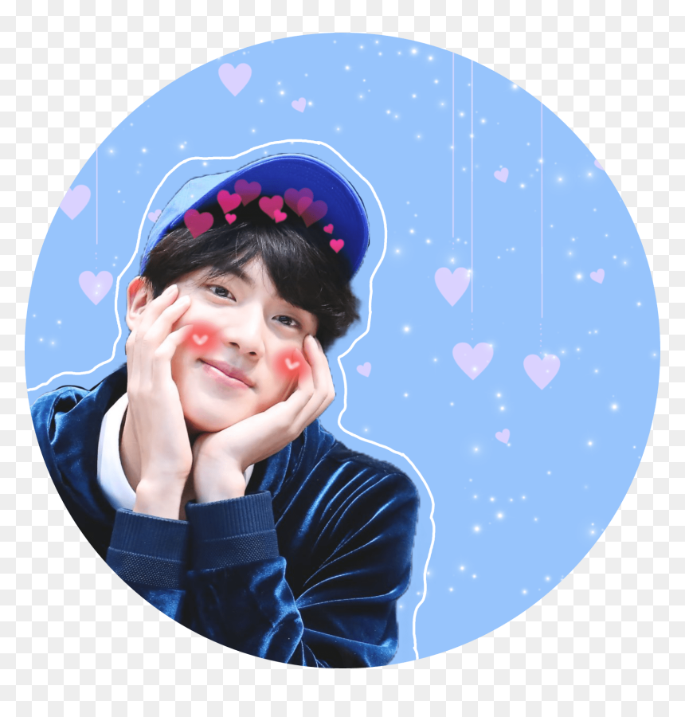
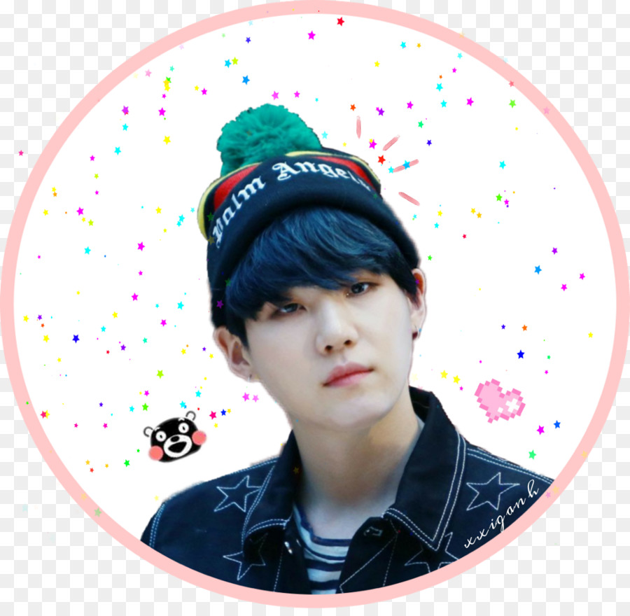
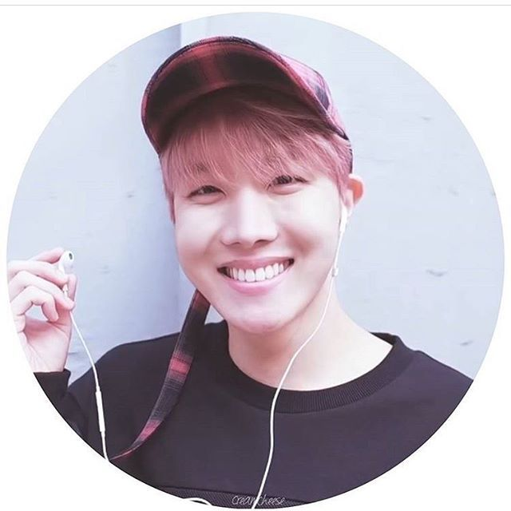
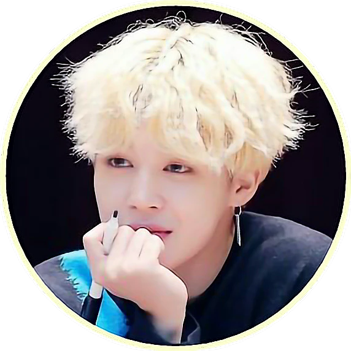
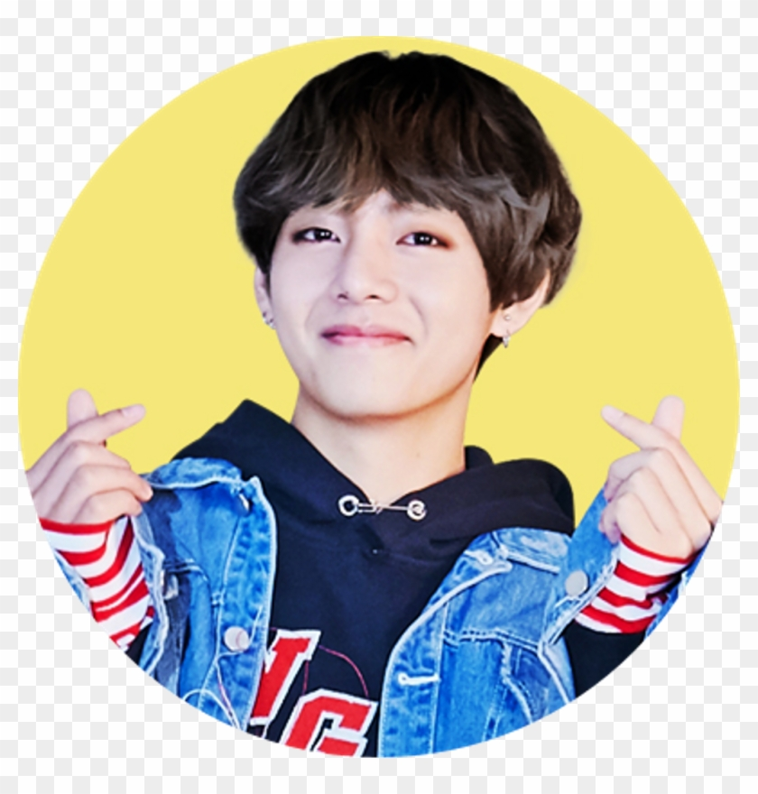

I am just so happy and amazed at all these new ARMYS joining our fandom! It's great that BTS are gaining so much popularity and I see it on the chats and on YouTube that tons of people, especially after the BBMA's are starting to realise actually how good they are. As someone who's been there from the very beginning since they first debuted it's weird seeing all this international popularity, but it's also amazing. I feel like a proud mother watching her kids go off to college. You want them to have fun and grow up but it's still so hard to see them go and fly the nest.
 Namjoon- He has taught me to be a strong loving leader and to support my friends just like how he helped Taehyung be a part of BTS as it was Namjoon's convincing that put Taehyung in the band. He's also taught me to persevere and that it's okay if some people don't like you because there will be a thousand other people who love you. He taught me to be confident and comical and also to be loyal like when the rest of BTS tested him by getting the manager to ask him if he wanted to go solo and he said no.
 Jin- He taught me to always be loving and kind and to take care of those who you love and who love you because it is so rewarding. He taught me to be the mum friend and to always support my loved ones. He also taught me to love how I look unconditionally because that's more important than other people loving how you look.
 Yoongi- He taught me to follow my dreams and pursue greatness no matter how long it takes or how many people don't support you. He taught me to be confident in myself and he is my inspiration for getting over my depression anxiety because he himself was in a dark place and he survived. He is also my music inspiration as he is so talented. He is strong and modest and he taught me to always keep going as there is always light at the end.
 Hoseok- He taught me to always be optimistic and fun loving and energetic even if you don't particularly feel happy because it will always help others. He taught me to pursue my personal dreams and also that sacrifice and generosity are amazing things, just like how he agreed to train as a rapper because Taehyung wanted to be a vocalist.
 Jimin- Jimin taught me to be proud of who I am and to always love myself unconditionally. I know he has had self esteem issues and body issues and some people have told him he needs to diet but through all this he has taught me I don't need to meet everyone's expectations of me, I only need to be what I want to be and I only need to satisfy myself. He has taught me to stay above the haters and still be gracious.
Jungkook- He has taught me to always be true to myself and not to listen to what others want to say against you. He has taught me to be happy and kind and respectful of those around me just like he is to he hyungs. He has taught me to stay grounded and also not to forget how education is important. The fact that he managed to be a K-pop star and graduate highschool with really good grades is amazing.
 Taehyung- And finally Taehyung. He has taught me so much. He is my inspiration. He has taught me don't be afraid to be weird and over the top and excitable all the time as those who love you will accept you. He has taught me to be respectful to both young and old and he has taught me it's okay to be a child at heart. He had taught me how important family is and that they shouldn't be taken for granted. He has also taught me it's okay to show your emotions to the people you love and care about, like how he stood up in front of thousands of people and talked about his grandma. He has taught me to be joyful in even the most horrible situations and he has taught me to be gracious with my talents. Taehyung has taught me that it doesn't matter where you come from you can still be amazing if you work for it, and that is exactly what he did he worked for it.
This project is made by a team of four people. BTS made a very strong impact on our lives. They told us how to be creative and just be ourselves and most importantly, how to love ourselves. They changed our way of thinking and made us courageous and strong. That's why we chose this topic for our semester's project. Every person worked hard for this project and everyone worked equally.
»bcsf20m510 Zoya Zahid
»bcsf20m541 Rida Shabbir
»bcsf20m503 Noor ul Ain
»bcsf20m514 Zunaira